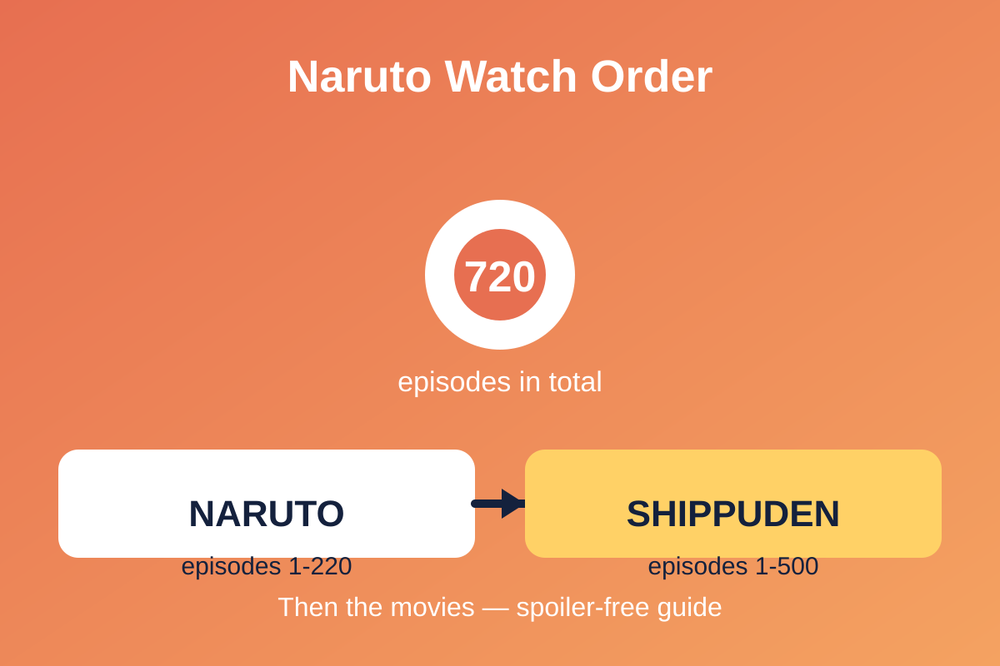

Naruto: the practical watch order
Naruto Watch Order
Naruto is one of the most popular anime of all time — 220 episodes of the original series followed by 500 episodes of Naruto: Shippuden. This guide gives you the complete watch order, explains which filler you can skip, and tells you where to watch officially, without spoiling the story.

What is Naruto about? (spoiler-free)
Naruto follows Naruto Uzumaki, a loud, determined young ninja who dreams of becoming Hokage — the leader of his village — so that everyone will finally acknowledge him. The series is about friendship, rivalry, hard work, and growing up: Naruto trains, takes on missions with his team, and slowly earns the respect of the people around him.
Who will enjoy it: if you like long-running action series with a big cast, training arcs, tournaments, and emotional payoffs that build over hundreds of episodes, Naruto is a natural pick. If you prefer short, self-contained stories, the episode count can feel daunting — in that case, use the filler guidance below to keep your first watch focused on the main story.
The complete Naruto watch order
| Step | What to watch | Episodes | Notes |
|---|---|---|---|
| 1 | Naruto (original series) | 1–220 | Start here. Episodes 1–135 carry the main story; 136–219 are largely filler (see below). |
| 2 | Naruto: Shippuden | 1–500 | The direct continuation, set a few years later. Watch it after the original series. |
| 3 | Movies (optional) | — | Side stories. Watch after the series, or after the point in the story they were released alongside — they are not needed to follow the plot. |
| 4 | Boruto (optional) | — | A separate sequel series about the next generation. Only start it after finishing Shippuden. |
1. Naruto (episodes 1–220)
Start with the original Naruto series from episode 1. The early episodes introduce Naruto, his teammates Sasuke and Sakura, their teacher Kakashi, and the world of ninja villages. Episodes 1–135 follow the main story; the long stretch from 136–219 is mostly filler created while the manga caught up, so first-time viewers can skip most of it and move straight to Shippuden.
2. Naruto: Shippuden (episodes 1–500)
Continue with Naruto: Shippuden after the original series. It picks up with the characters older and the stakes higher, and its later story depends on character and world developments established earlier. Shippuden mixes canon episodes with filler stretches, so use a current episode guide if you want to skip filler (see the ranges below).
3. Optional movies and extras
Treat movies and side material as optional unless you specifically want a broader franchise watch. The films are standalone adventures that do not change the main TV story. Release and canon status can vary by title.
Which Naruto filler can you skip?
Original series: episodes 1–135 are mainly canon story. Episodes 136–219 are largely filler — you can skip them on a first watch and lose almost nothing from the main plot. If you enjoy the characters and want more time with them, a few of these episodes are light, fun side stories you can return to later.
Shippuden: filler is scattered through the run rather than grouped in one block. The main filler stretches are episodes 57–71, 91–112, 144–151, 170–171, 176–196, 223–242, 257–260, 279–281, 284–295, 303–320, 347–361, 376–377, 388–390, 394–413, 427–450 and 480–483. Some episodes mix canon scenes with filler scenes, so check a current, well-maintained episode guide before skipping a "mixed" episode — skipping it entirely can remove story context.
Where to watch Naruto officially
Crunchyroll streams Naruto and Naruto: Shippuden in many regions, with both subtitled and dubbed versions. Netflix and Hulu also carry the series in some countries, but availability varies by region, so check your local catalogue before subscribing. AnimeZax does not host episodes and never links to unofficial streaming sites.
Naruto watch order FAQ
Should I watch Naruto before Naruto: Shippuden?
Yes. Watch the original series first, then continue with Shippuden. Shippuden follows the same characters a few years later and assumes you know the original series.
Can I skip Naruto filler episodes?
Yes. In the original series, episodes 136–219 are largely filler and can be skipped on a first watch. Shippuden mixes canon and filler, so check a current episode guide before skipping.
Where can I watch Naruto officially?
Crunchyroll streams Naruto and Naruto: Shippuden in many regions. Netflix and Hulu availability varies by country — check your local catalogue.
Do I need to watch the Naruto movies?
No. The movies are optional side stories and are not required to follow the main TV story. Watch them after the series if you want more of the characters.
Release schedules, episode listings, regional availability, and franchise announcements can change. Verify current details with official distributors and local sources before planning a watch.